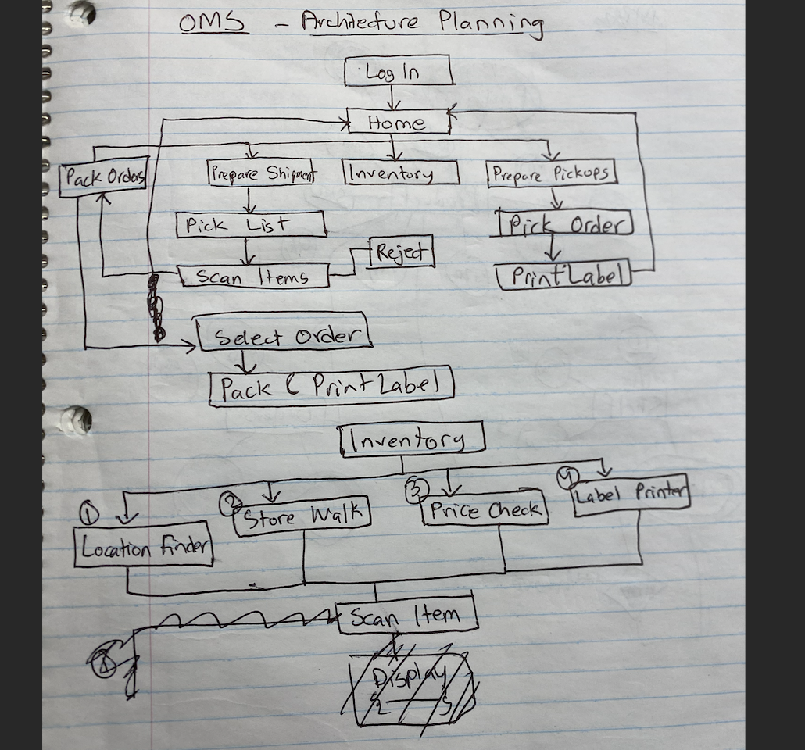
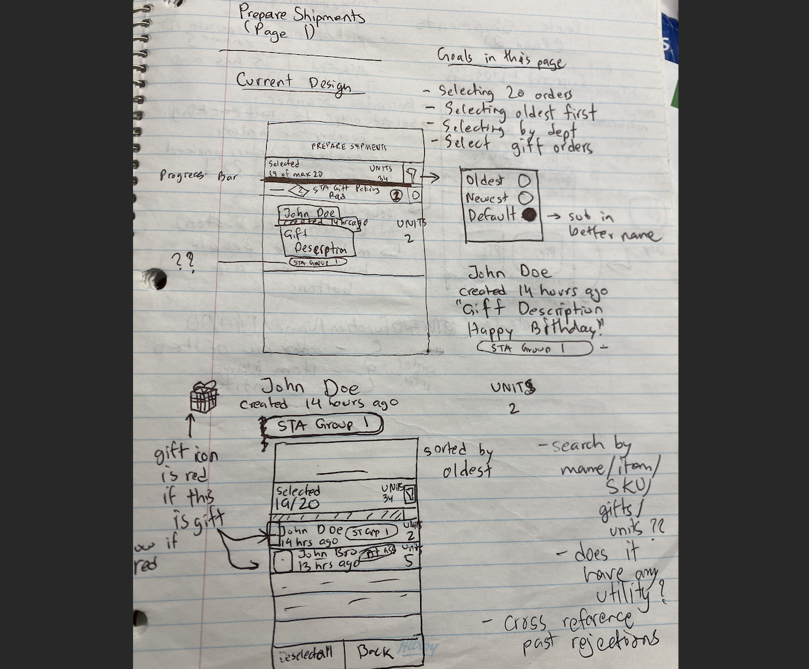
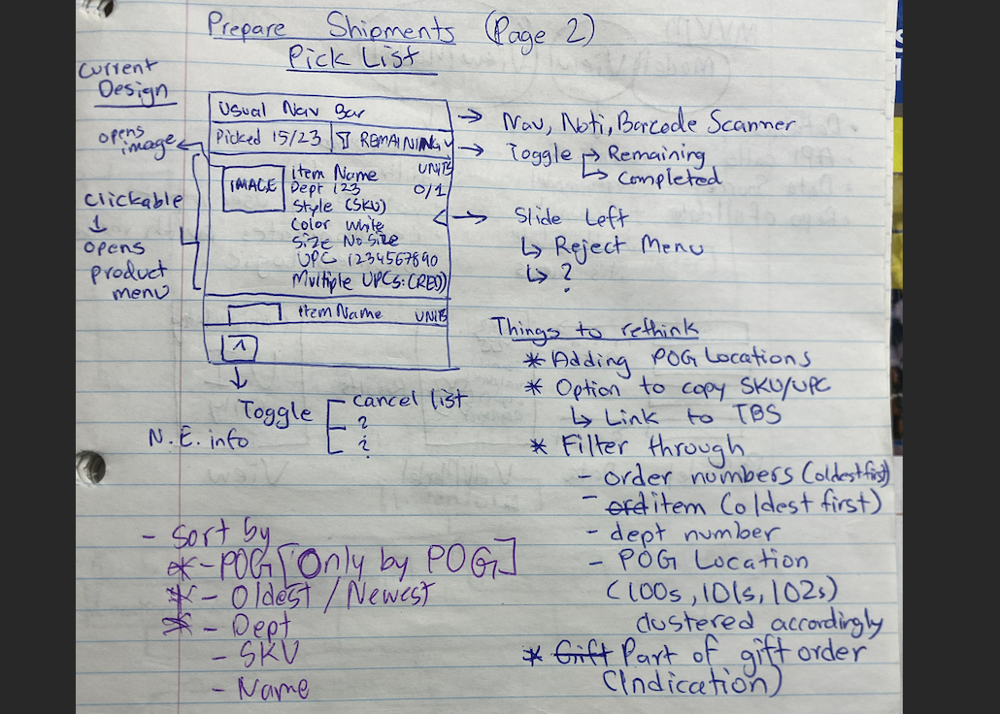
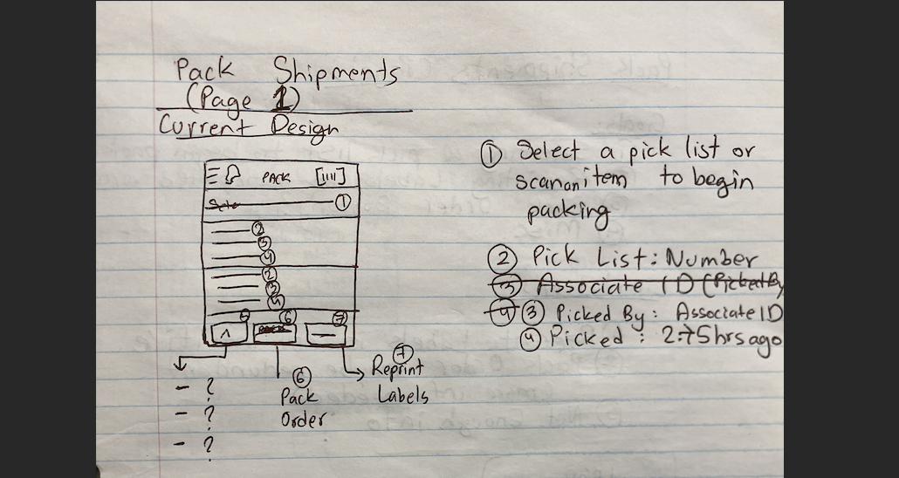
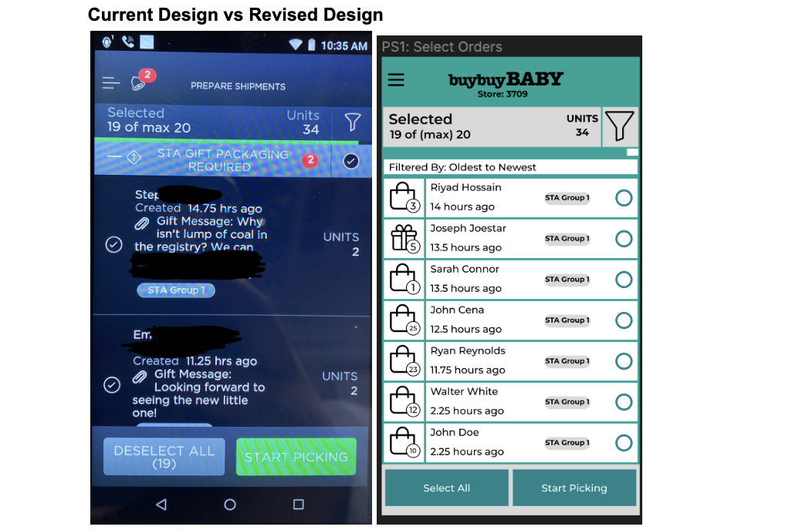
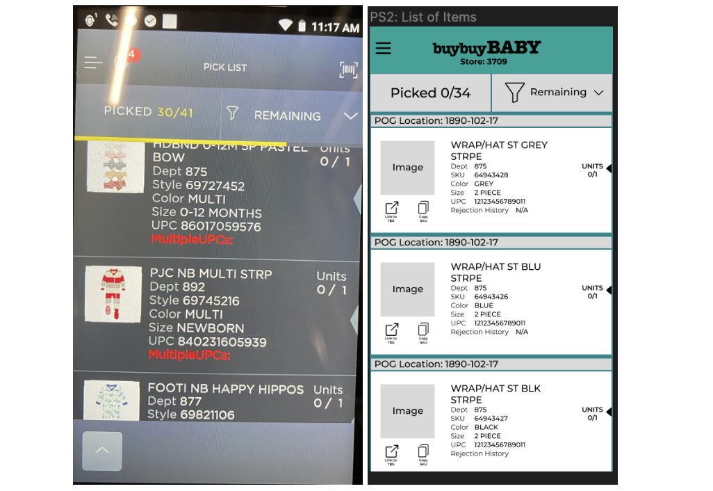
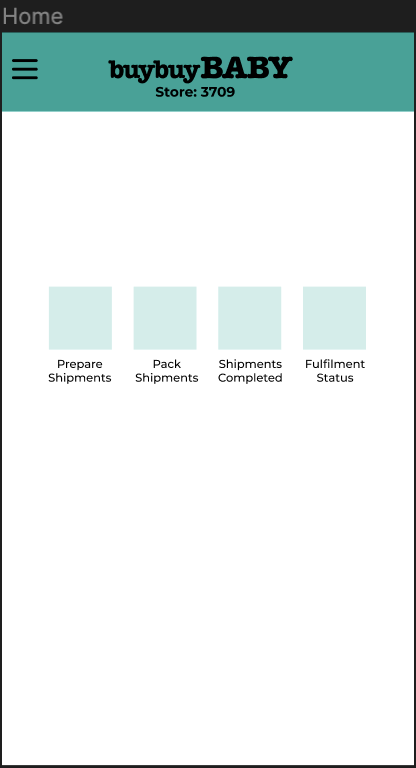
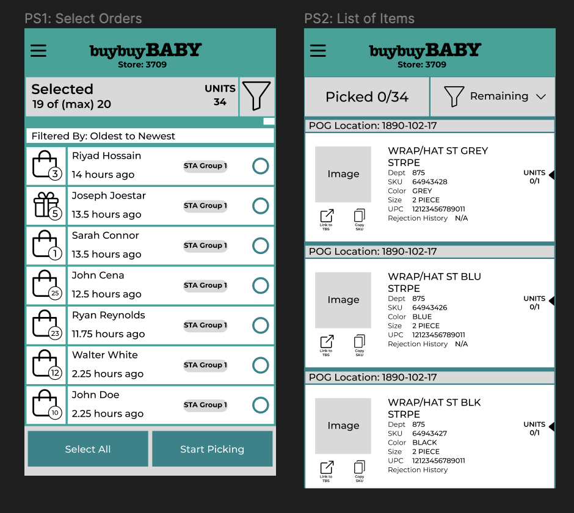

The Problem
Working as a Fulfilment Associate at BuyBuy Baby, I used an order management system called Omni every shift. Over time, I noticed patterns in how my coworkers and I struggled with the same friction points — unclear shelf locations, cluttered order views, unintuitive workflows, and a general sense that the interface was designed for a database, not a person.
The tool got the job done, but it worked against us rather than with us. In retail, where speed and accuracy directly impact customer satisfaction, a poorly designed tool isn't just a frustration — it's a risk.
Research & Discovery
My research advantage here was unique: I was the user. Over months of daily use, I documented pain points and informally interviewed coworkers about their biggest frustrations. Key insights:
- Shelf location data was buried and inconsistent, slowing item retrieval
- Order information was spread across multiple screens, requiring excessive navigation
- The packing and shipping workflow had unnecessary confirmation steps that added no value
- New employees struggled with the learning curve — the system had no clear entry point
- The visual design was dense and low-contrast, increasing cognitive load during busy shifts
Sketches & Planning




Wireframes


Final Design
The redesign focused on three core workflows: Prepare Shipments, Pack Shipments, and Completed Orders. Each was reconstructed with a cleaner information hierarchy, more contextual data visible at a glance, and a visual language using familiar BuyBuy Baby brand colours.


Lessons Learned
Being the user gave me incredible research depth, but it also created blind spots. I found myself assuming shared knowledge that newer employees didn't have. This reinforced how important inclusive design is — not just for accessibility, but for onboarding and experience-level diversity within the same user group.
In enterprise and retail tooling, the best UX is often invisible: the goal is that associates don't have to think about the interface at all. They should be focused entirely on the customer.